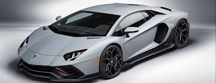

The Lamborghini Aventador is an iconic Italian supercar that represents the pinnacle of Lamborghini’s V12-powered performance heritage, combining breathtaking speed, aggressive design, and extraordinary engineering. At the heart of the Aventador is a naturally aspirated 6.5-liter V12 engine that produces immense power — up to around 770 hp in the high-end SVJ variants — and propels the mid-engine coupe from 0 to 100 km/h in roughly 2.8–2.9 seconds with a top speed in excess of 350 km/h, showcasing both blistering acceleration and exhilarating straight-line performance. Its sharply sculpted body, signature scissor doors, and low, aerodynamic profile embody Lamborghini’s striking design philosophy, making the Aventador as much a visual statement as a performance machine. Advanced all-wheel drive, a responsive ISR 7-speed gearbox, and sophisticated drivetrain technology deliver exceptional handling and control, whether on a winding road or a racetrack. Inside, drivers enjoy a focused yet refined cockpit experience with premium materials and driver-oriented ergonomics that emphasize both luxury and performance. The Aventador remains one of the most revered supercars of its era, admired for its raw power, dramatic presence, and uncompromising driving experience.